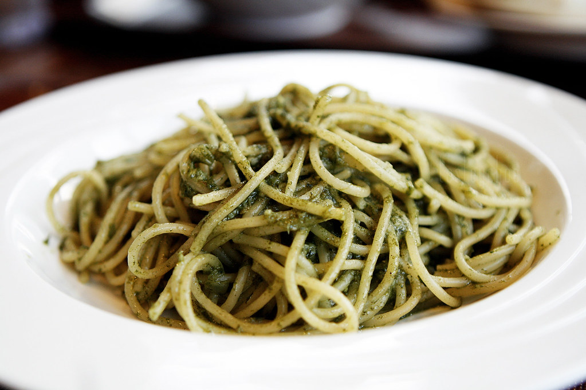

Pesto Pasta

A delicious pasta dish made with pesto sauce!
Easy to make, but full of flavor! Good hot or cold.
Ingredients:
- 2 1/2 tablespoons of pesto
- 1/2 cup of chopped onions
- 2 tablespoons of olive oil
- 1 package of pasta
Instructions:
- Bring water to a boiling point
- Put the ingredients in and cook
- Drain water and serve, wait untill cooled to eat
Return home